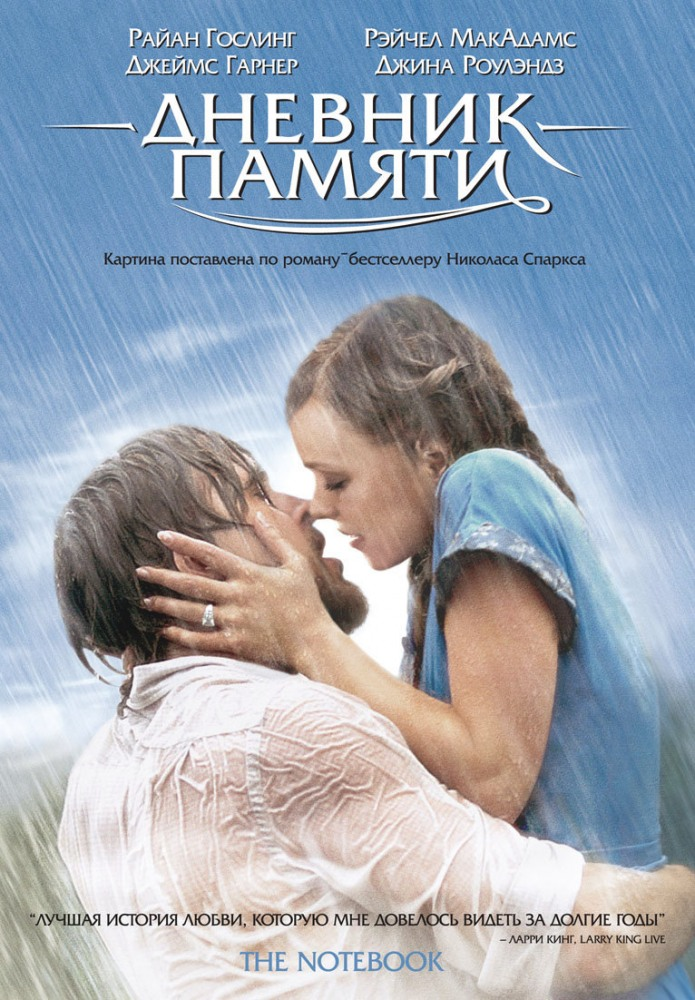
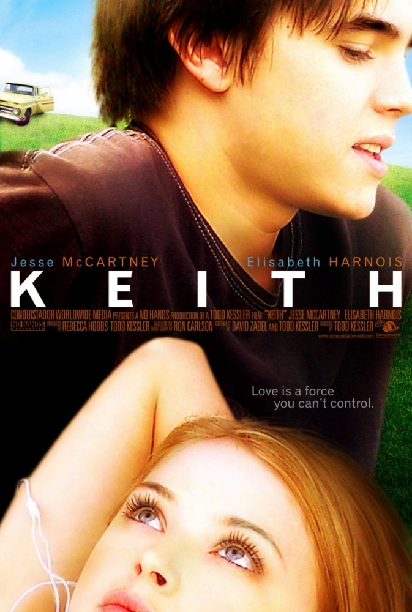

Один день
Эмма — романтична, остра на язык и хочет изменить мир к лучшему. Декстер — плейбой, баловень судьбы и хочет, чтобы мир принадлежал ему.
Впервые Эм и Декс встретились 15 июля на выпускном в колледже и провели вместе только один день. А потом пришла ночь, и они…решили остаться друзьями. Мы увидим их в тот же день через год, через два… Но сколько лет должно пройти, чтобы они поверили в свою любовь и поняли, как много значил для них этот ОДИН ДЕНЬ?
Сладкий ноябрь
Рекламный агент-трудоголик Нельсон Мосс быстро мчится по жизни и не представляет себе ничего другого. Но живая и эксцентричная Сара Дивер, наполовину соблазнительница, наполовину философ, вполне представляет. Если у неё получится, Нельсон станет её новой победой в серии исправленных людских судеб.

Дневник памяти
Это история отношений юноши и девушки из разных социальных слоев, живших в Южной Каролине. Ной и Элли провели вместе незабываемое лето, пока их не разделили вначале родители, а затем Вторая мировая война.
После войны все изменилось: Элли обручилась с удачливым бизнесменом, а Ной жил наедине со своими воспоминаниями в старинном доме, который ему удалось отреставрировать. Когда Элли прочла об этом в местной газете, она поняла: ей нужно найти его и решить наконец судьбу их любви…
Спеши любить
Лэндон Картер — кумир своей школы: он независим, красив и жесток к изгоям. И конечно, он не замечает невзрачную Джейми, думающую только об учебе. После очередной дурацкой выходки Картера заставляют заниматься с отстающими и играть в школьном спектакле.
Тут уж ему не обойтись без помощи скромной отличницы. Джейми соглашается помочь Лэндону, но только если он пообещает, что не будет влюбляться в неё. Самонадеянный парень охотно дает клятву, но вскоре он убедится, что сдержать её будет очень непросто…

Кит
В класс к семнадцатилетней Натали приходит новый ученик Кит Зеттерстром. Поначалу ничего, кроме раздражения, молодой человек в Натали не вызывает, к тому же он становится её партнером по лабораторным работам. Постепенно девушка влюбляется, и Кит отвечает ей взаимностью, но начавшимся отношениям может помешать темная тайна, которую скрывает Кит…
 Корзина
Корзина